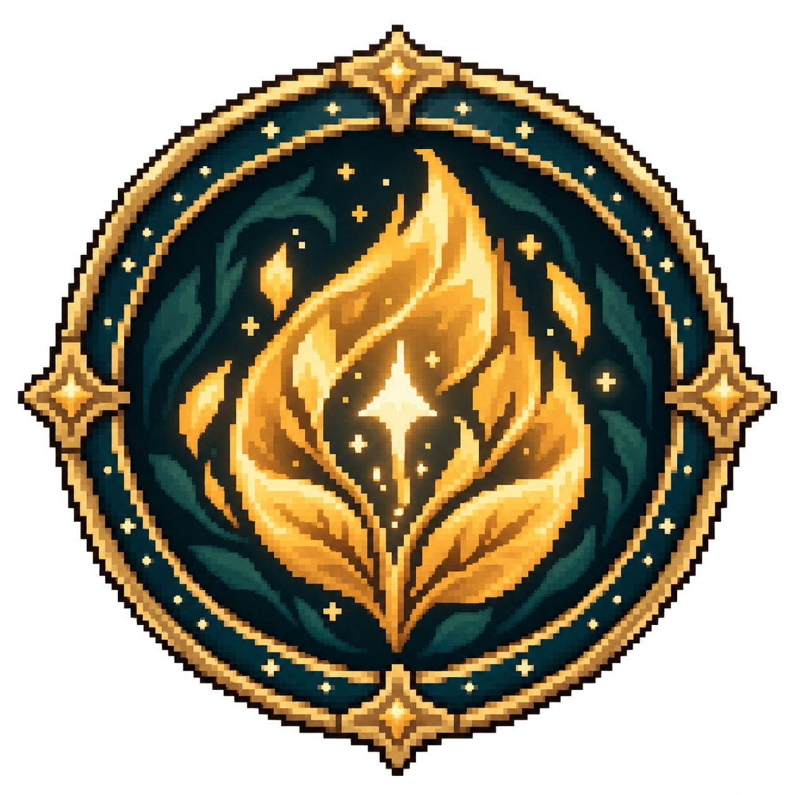
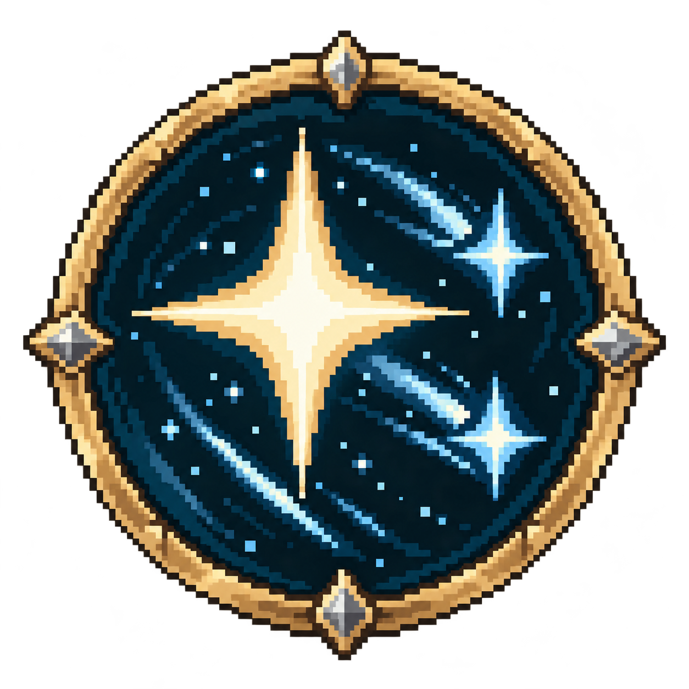

Nur zur visuellen Abnahme. Echte Aufnahmen aus einer getrennten Ingame-Vorschau. Die Entwürfe sind noch nicht ins Spiel oder in die spielbare Testversion übernommen.
V2 nach deinem Feedback: engere und kräftiger leuchtende Figurenringe, wiederkehrende Mara-Impulse und eine klar abgegrenzte Sternensalve mit Flächentreffer. Der radiale Cooldown bleibt wie gezeigt.


Gemeinsamer Messingrahmen, warmes Blattlicht für Mara und kühles Sternenlicht für Ilyra. Die Bodenmarkierungen greifen diese Formen wieder auf.
1 · Radialer Cooldown
Von 14 Sekunden bis „Bereit“
Der dunkle Kreissektor gibt das Symbol nach und nach frei. Die Sekundenzahl bleibt lesbar; bei Bereitschaft leuchtet das vollständige Symbol. Die Automatik erhält eine eigene kleine Kennzeichnung.
Vergrößerter Spielausschnitt für die Handy-Abnahme.
Während des acht Sekunden langen Buffs fliegt jede Sekunde ein warmer Lichtimpuls von Mara zum Turm. Jeder Impuls belebt das Blatt-Siegel kurz; der Waffenschimmer und wenige Lichtpunkte verbinden die Impulse. Nach Ablauf enden sie gemeinsam. Das sind visuelle Impulse derselben Verstärkung, keine zusätzlichen Buffs.
Vergrößerter Spielausschnitt für die Handy-Abnahme.
Neun pulsierende Sterne fächern sich über die Trefferfläche auf. Der helle Rand zeigt den tatsächlichen Schadensradius von 72 Spieleinheiten. Alle Sterne treffen gleichzeitig ein; die gesamte Fläche blitzt kurz auf und jeder Gegner darin erhält einen kleinen Trefferfunken. Die Sterne verdeutlichen einen gemeinsamen Flächentreffer, keine neun separaten Schadensereignisse.
Die Effektprobe wiederholt die Darstellung in kurzen Schleifen. Sie zeigt keine geänderten Spiel-Abklingzeiten; die Umgebung bleibt für den Vergleich stehen.
Alle Ingame-Screenshots
Bild antippen, um es in voller Auflösung zu prüfen.